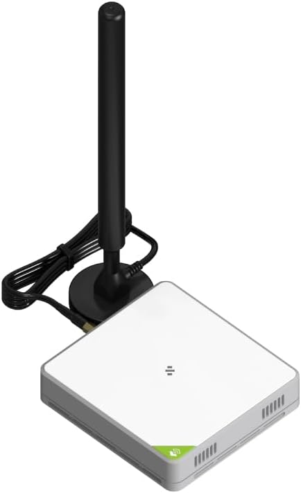
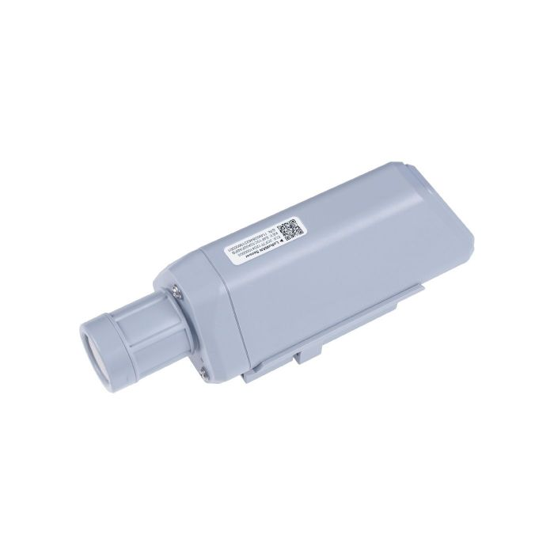

３万円ではじめるLoRaWAN
購入品

LoRaWANゲートウェイ SenseCAP M2
メーカーリンク
https://relshop.seeedstudio.com/SenseCAP-Multi-Platform-LoRaWAN-Indoor-Gateway-SX1302-AS923-p-5473.html
購入先
秋月電子通商
購入価格 \16,280（税込） 購入時期 2023.11

LoRaWAN温湿度センサー SenseCAP S2101
メーカーリンク
https://www.seeedstudio.com/SenseCAP-S2101-LoRaWAN-Air-Temperature-and-Humidity-Sensor-p-5354.html
購入先
マルツオンライン
購入価格 \9,898（税込） 購入時期 2023.11
購入したのは以上２点だけです。LoRaWANゲートウェイには、電源アダプタが同梱されていませんが、PoEでLANケーブルから給電可能です。PoE電源を持っていない場合はPoE内蔵のスイッチングハブかPoEインジェクタ、または電源アダプタを入手する必要があります。
あと、ゲートウェイの設置にはインターネット接続環境が必要です。